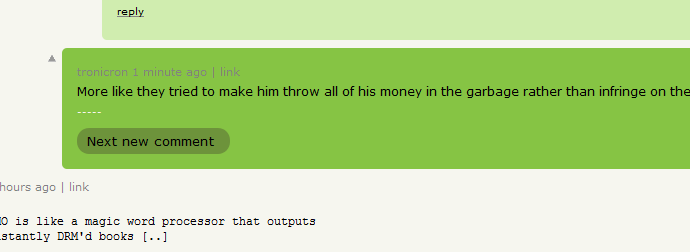

hnCommentWatcher: yet another bookmarklet (https://github.com/christopherdebeer/hnCommentWatcher)
9001 points by iambot 0 minutes ago | like | discuss
This is yet another bookmarklet for hacker news. by Christopher de Beer
hnCommentWatcherExamples
OP
OP (the original poster) is highlighted on each comment they make. this makes it easier to see what the person who posted the link to HN has contributed to the thread. The Image below is an example of how it would be styled/indicated.

New Comments
New comments are displayed in green (see example below). and the first new comment is scrolled into view by default. If there are > 1 new comments then each will have a button at the bottom linking to the next new comment, to make navigation easier.
Newish comments
When the page is reloaded by hnCommentWatcher comments that were new are marked in light green (see example below) for a short period before reverting to unstyled, this is so that when there is an update and you may not have read all the new comments in time, its easy to locate/identify "Newish" comments.